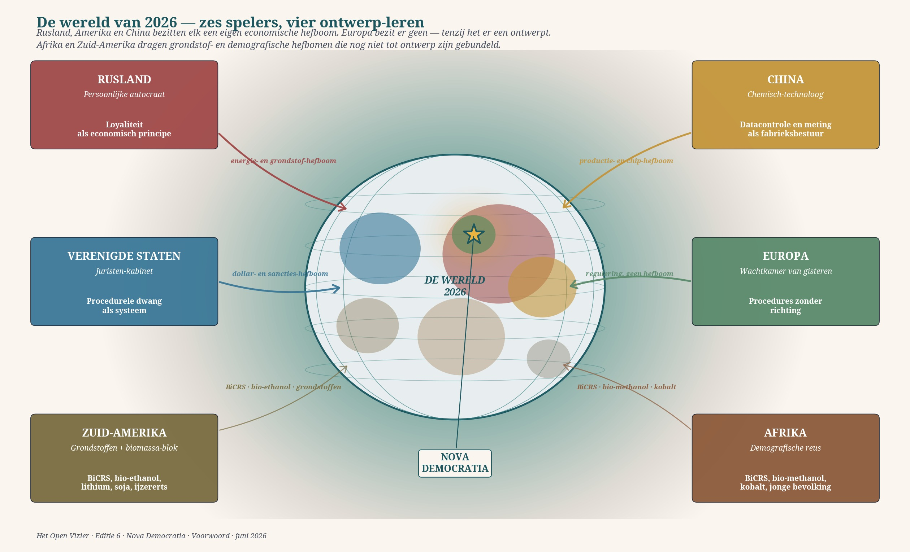
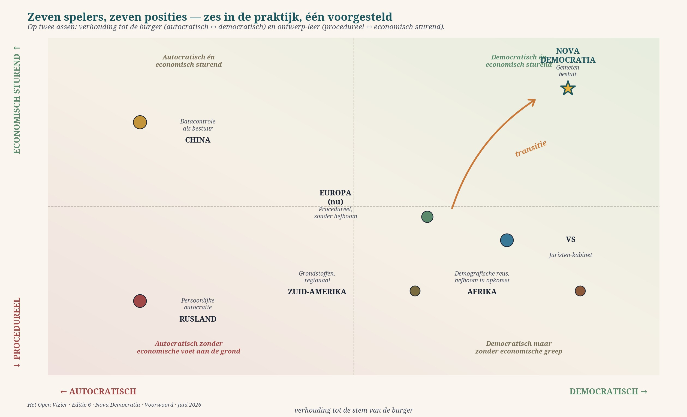

Qui regarde autour de soi en 2026 voit trois puissances mondiales avec un point commun : elles sont dirigées par des personnes ayant un profil professionnel reconnaissable, et cela se reflète dans la manière dont elles gouvernent leur État. L'Europe est l'exception, et c'est là que réside le problème.

Trois puissances, trois conceptions
Vladimir Poutine gouverne la Russie en autocrate personnel. Une double construction se cache dessous : politiquement, une autocratie personnalisée et consolidée où le président et son cercle proche prennent toutes les décisions stratégiques sans rendre compte au pouvoir législatif ou judiciaire ; économiquement, un capitalisme d'État kleptocratique qui, depuis 2014, exproprie avec une intensité croissante les entreprises privées, les redistribue aux amis du Kremlin, et depuis février 2025 conçoit une législation pour confisquer définitivement les fonds gelés d'investisseurs étrangers. Le rapport de la Fondation Bertelsmann sur la Russie de 2026 décrit le système comme une « personalized, consolidated autocracy » — un tsar sous forme moderne. La propriété d'entreprise est une faveur du souverain, pas un droit. Qui se comporte mal perd non seulement l'entreprise mais potentiellement aussi sa liberté. Les oligarques fonctionnent comme les boyards du tsar Nicolas : possession sur bail, loyaux ou déchus. L'enrichissement personnel via le cercle des siloviki est estimé à trois cents milliards de dollars par an — un volume de capital équivalent au Danemark qui échappe à l'économie ordinaire.
Donald Trump gouverne les États-Unis avec un cabinet plein de conseillers formés au droit. Pam Bondi, ancienne procureure générale de Floride, comme secrétaire à la Justice. Marco Rubio, juriste-politicien, comme secrétaire d'État. Le schéma n'est pas un hasard. Le second mandat de Trump est explicitement décrit par des économistes universitaires, des commentateurs et d'anciens PDG comme une adhésion au capitalisme d'État : un contrôle inédit sur les entreprises, des attaques publiques contre des dirigeants qui le contredisent, des licenciements forcés, un versement obligatoire de bénéfices au gouvernement fédéral. L'article Wikipedia sur le capitalisme d'État comporte depuis 2025 un nouveau paragraphe sur les États-Unis où cela est décrit comme un changement systémique. Le caractère juridique du pouvoir n'est pas accidentel — il est structurel. Les lois sont utilisées comme des armes, les contrats comme des moyens de pression, le département de la Justice comme instrument de campagne personnelle. La conception est claire : le pouvoir par la contrainte procédurale, pas par l'équilibre constitutionnel.
Xi Jinping a étudié la technologie chimique de mille neuf cent soixante-quinze à mille neuf cent soixante-dix-neuf à l'université Tsinghua de Pékin — numéro un mondial dans ce domaine selon US News & World Report. Il gouverne la Chine comme s'il s'agissait d'une usine. Contrôle des données sur un milliard quarante millions de personnes, un système de crédit social déployé depuis 2014, une infrastructure de surveillance sans précédent dans l'histoire humaine, et un Parti communiste de soixante-dix-neuf millions de membres posé comme couche de contrôle qualité au-dessus de la population. La conception du pouvoir est celle d'un ingénieur chimiste : mesurer, piloter, et lorsqu'un élément se comporte mal, le retirer du réacteur. La population n'est ni électeur ni citoyen ; elle est matière dans un processus. Cela fonctionne — pour le Parti. La productivité de la Chine croît, la technologie s'accélère, le pouvoir géopolitique augmente. L'étudiant chinois qui obtient son diplôme en 2030 se trouve dans un pays arithmétiquement plus fort que les États-Unis et politiquement plus cohérent que l'Europe.
La Russie a un tsar, l'Amérique des juristes, la Chine un chimiste. L'Europe a des commissaires qui n'ont pas été élus et des chanceliers qui n'osent plus s'adresser à leur propre peuple.
L'Europe comme hier
Face à ces trois puissances se dresse l'Europe. Une Union de vingt-sept États membres, une Commission qui n'est pas démocratiquement légitimée, un Parlement qui n'a pas d'initiative législative, une Cour qui s'est placée au-dessus de la justice nationale, et dans les capitales nationales une série de premiers ministres et de chanceliers qui n'osent plus s'adresser à leurs propres électeurs sans consulter d'abord la Commission et la presse. L'Union européenne a publié en janvier 2025 une Boussole de compétitivité dans laquelle la « compétitivité » a été déclarée principe englobant — la même Union qui, depuis deux mille treize, n'a rendu aucune partie de sa politique industrielle plus productive que ses homologues chinois, américains ou même russes. La Carnegie Endowment a publié en décembre 2025 une consultation auprès de stratèges européens intitulée Is the EU Too Weak to Be a Global Player? — la réponse écrasante était oui. Le rapport de la Vrije Universiteit Brussel European Sovereignty or Decline? de novembre 2025 le confirme : l'Europe se trouve au bord de l'insignifiance stratégique, sans plan pour s'en sortir hormis l'espoir que les trois autres se démantèlent un jour eux-mêmes.
L'Europe croit encore que sa démocratie se défendra bien toute seule. Que les certitudes procédurales de Strasbourg et de Luxembourg sont autoporteuses. Qu'un axe franco-allemand, ou une mousse d'enthousiasme polono-italienne, ou un nouveau président de la Commission peut faire le travail qu'un tsar, un cabinet d'avocats et un chimiste font systématiquement depuis des années. Ce n'est pas le cas. Aucune autocratie dans l'histoire mondiale n'a chuté parce qu'elle avait une démocratie en face d'elle. Les autocraties tombent lorsque leur économie ne tient plus, que leur population perd l'illusion, ou qu'un rival les dépasse technologiquement. L'Europe ne fait aucun des trois. Elle se démocratise à l'intérieur de ses propres murs avec une inefficacité croissante et exporte pendant ce temps sa capacité industrielle vers la Tchéquie, la Pologne et la Chine. Elle ne canalise plus sa jeunesse vers des formations techniques mais vers des débats sociétaux sur l'identité. Elle perd ses agriculteurs, son industrie, sa production de défense, sa capacité pharmaceutique, ses fabricants de puces, son autonomie énergétique — quasiment dans cet ordre — tout en se disant que c'est un succès grâce aux « valeurs ». Les valeurs ne valent quelque chose que si elles sont portées par une économie qui produit réellement. Au moment où un chercheur européen va travailler dans une université américaine parce que l'université néerlandaise voit son budget réduit de moitié, et qu'une entreprise belge de puces émigre à Taïwan parce que la réglementation est étouffante, alors les valeurs européennes ne sont plus qu'un musée.
Deux continents restent souvent hors champ dans cette analyse, à tort. L'Amérique du Sud et l'Afrique portent non seulement des matières premières classiques — lithium, cobalt, minerai de fer, soja — mais possèdent aussi les deux leviers qui détermineront leur poids dans l'ordre technologique de la prochaine décennie : le BiCRS (un produit de Carbon-Alert Ltd) (biomass carbon removal and storage) à l'échelle industrielle, et la fabrication de bioéthanol et de biométhanol à partir de leur propre biomasse. Le Brésil produit déjà plus de trente milliards de litres de bioéthanol par an à partir de canne à sucre. L'Afrique dispose de la ceinture tropicale-équatoriale où la productivité de la biomasse est deux à trois fois plus élevée que dans les zones tempérées. Qui maîtrise les voies chimico-physiques de captage du CO₂ et de carburant alcoolique maîtrisera en deux mille trente le maillon le plus propre de la chaîne mondiale — un maillon que ni la Russie, ni l'Amérique, ni la Chine ne peuvent reproduire géographiquement.
Le levier européen qui n'existe pas encore
C'est là que se trouve le levier que l'Europe recherche. Pas dans une nouvelle réglementation, pas dans un euro numérique, pas dans un nouvel accord commercial. Mais dans l'orchestration de l'axe biomasse : capital, conception, normalisation et débouchés dont l'Amérique du Sud et l'Afrique ont besoin pour construire leurs installations BiCRS et leurs usines de biocarburants à l'échelle industrielle, et dont l'Europe elle-même a besoin pour posséder — pour la première fois depuis les années quatre-vingt — son propre levier énergétique et climatique. Ce n'est ni de l'aide au développement ni une relation coloniale ; c'est une alliance mesurée entre continents qui ont besoin les uns des autres. L'Amérique du Sud et l'Afrique ont la biomasse, le soleil et la démographie. L'Europe possède — encore — le savoir-faire en génie chimique, le capital de procédés et l'accès au marché de ses propres cinq cents millions de consommateurs prospères, ainsi qu'à ceux de ses partenaires commerciaux. Qui relie ces trois continents de manière mesurée via le BiCRS et le biométhanol/éthanol produit quelque chose que ni Poutine, ni Trump, ni Xi ne peuvent reproduire : un axe climatique industriel qui capte le CO₂ tout en produisant un carburant de haute qualité, avec un centre de gravité géographique là où se trouve le soleil et un centre de gravité intellectuel là où se trouvent les facultés de chimie.
L'Union européenne a publié depuis deux mille six onze stratégies industrielles successives sans en relier une seule à un mécanisme de livraison vers un continent hors d'Europe. Les facultés de chimie néerlandaises, allemandes et françaises produisent encore des publications de premier plan sur la conversion biomasse-liquide — mais les installations sont construites au Brésil, en Indonésie et au Nigeria par des consortiums asiatiques. La quatrième voie exige qu'un conseil fédéral économique européen lance un programme d'orchestration pluriannuel qui réunisse ces trois éléments — conception chimique venue d'Europe, biomasse venue d'Amérique du Sud et d'Afrique, et sécurité des débouchés via la législation européenne — en un seul plan mesuré. Sans un tel plan, l'Europe reste la salle d'attente d'hier. Avec un tel plan, l'Europe redevient un acteur mondial — non pas sur l'axe militaire ou monétaire, mais sur le seul axe qui compte vraiment en deux mille trente et au-delà : l'énergie et la maîtrise du climat. La manière dont ce levier se concrétise — quelle culture, quelles installations, quel calendrier — fait l'objet de l'Édition 7 : la réponse à la question que pose cette Édition.
Leur position sur le graphique de positionnement ci-dessous — démocratique mais sans doctrine de conception propre — n'est donc pas un statut permanent. C'est une invitation.

Le mode consensus doit céder la place en premier — sinon le levier reste un dessin
C'est ici que réside le cœur de tout ce chapitre, et de toute cette série. L'axe d'orchestration européen que je décris ci-dessus — BiCRS, bioéthanol, biométhanol, trois continents réunis — est techniquement réalisable, économiquement nécessaire et stratégiquement inédit. Mais il est institutionnellement impossible sous la conception actuelle de la gouvernance européenne. La forme de gouvernance bruxelloise, en fait un modèle de concertation perfectionné à l'échelle continentale, ne peut pas porter un tel plan. Pas par manque de bonnes personnes — elles sont nombreuses — mais parce que la conception elle-même place la négociation au-dessus de la décision, le consensus au-dessus de la direction, et la procédure de troisième ordre au-dessus de la mesure de premier ordre. Le mode consensus, qui a conduit aux Pays-Bas à une prospérité inégalée au vingtième siècle, s'est dégradé au vingt-et-unième siècle en un rituel : chacun est écouté, aucune décision n'est prise, et ce qui reste est une moyenne que personne ne voulait mais que tous acceptent parce que la contradiction coûte plus cher que la capitulation.
Cet esprit voit les ordres supérieurs — mesure à long terme, transformation structurelle, correction mesurée allant à l'encontre de la voix — non comme des solutions mais comme des problèmes. Qui arrive dans une réunion bruxelloise avec des chiffres sur le déclin de la productivité européenne voit vingt-cinq têtes hocher puis la discussion se déplacer vers le point suivant de l'ordre du jour sur l'inclusion ou la souveraineté numérique. Qui propose de mettre en place un axe biomasse continental en collaboration avec le Brésil et le Nigeria entend immédiatement trois objections — passé colonial, droits humains dans la chaîne de production, effets environnementaux du transport — chacune légitime individuellement mais qui, ensemble, produisent un blocage dont seuls les concurrents asiatiques profitent. Le mode consensus n'est pas de la mauvaise volonté ; c'est un défaut de conception. Il traite chaque objection de quatrième ordre comme équivalente à chaque fait de premier ordre, et parce que les objections de quatrième ordre sont multipliables à l'infini et les faits de premier ordre finis, celui qui objecte gagne toujours. Le résultat : l'Europe négocie, mais n'aide pas le monde à avancer.
L'axe biomasse ne peut donc être construit que si l'Europe transforme d'abord sa conception de gouvernance — pas ensuite. Il ne s'agit pas de construire d'abord les installations puis d'adapter l'institution. C'est exactement l'inverse : tant que la gouvernance européenne restera en mode consensus, chaque axe climatique industriel restera bloqué en étude préalable, sera relégué dans un groupe de travail, ou sera écarté après trois mandats de commissaires comme « plus prioritaire ». La transformation institutionnelle que décrivent les douze épisodes de cette série — un conseil fédéral mesuré, une instance de mesure de premier ordre indépendante, une répartition révisée des rôles entre les ordres un à quatre, une couche UEI qui canalise le contre-pouvoir européen — n'est pas une alternative à côté du levier stratégique. Elle en est la condition. Sans cette transformation, l'axe d'orchestration européen reste ce qu'il est aujourd'hui : une présentation PowerPoint lors d'un sommet stratégique bruxellois, où sept commissaires hochent la tête, deux objections sont consignées, et personne ne construit jamais l'installation.
C'est le point le plus important de ce chapitre. Le levier existe. Les quatre doctrines de conception du monde sont claires. L'Europe peut choisir entre le mode consensus et la décision mesurée. Avec le mode consensus, l'Europe continue de négocier tandis que la Russie gouverne depuis l'autorité personnelle, l'Amérique depuis la contrainte juridique et la Chine depuis la maîtrise chimique. Avec la décision mesurée — avec la transformation que décrit cette série — l'Europe construit le seul levier mondial encore libre : captage du CO₂ plus carburant, trois continents réunis, conception propre, résultat mesuré. Le dessin sur le mur. Ou l'installation au Brésil et au Nigeria. Ce choix, l'Europe le fait maintenant, ou il sera fait pour elle.
La quatrième voie
L'analyse occidentale habituelle dit que l'Europe a le choix entre trois voies : plus de démocratie (avec une prise de décision plus lente), un retour à la souveraineté nationale (avec fragmentation économique), ou la reddition à l'une des trois puissances mondiales (l'Amérique étant le choix habituel). Aucune des trois n'est une issue. La première aggrave le problème. La deuxième est un fantasme politique tant que les entreprises européennes ont besoin des marchés européens. La troisième n'est pas une solution mais une soumission.
Il existe une quatrième voie, et elle est à portée de main dans un pays qui en est un exemple fonctionnel depuis mille huit cent quarante-huit. Démocratie complète combinée à un leadership économique compétent qui peut aller à l'encontre de la voix lorsque la réalité mesurée l'exige. Ni monarchie, ni technocratie, ni autocratie. Mais une conception où la mesure de premier ordre — économie, productivité, démographie, capacité de défense — a priorité sur la voix de troisième ordre du moment électoral. La voix du citoyen reste souveraine sur la direction ; la mesure détermine la faisabilité. Un dirigeant qui constate que la productivité du secteur public a baissé de neuf pour cent en six ans — un fait publié par le CPB en 2023 — peut décider d'aller à l'encontre de cela, même si cela ne lui fait pas gagner la prochaine élection.
C'est ce que propose Nova Democratia : non pas l'abolition de la démocratie, mais son sauvetage en la séparant de l'élément autodestructeur. La démocratie à l'ancienne est la voix qui ne peut pas se corriger elle-même — qui peut voter aveuglément pour une friction de troisième ordre tandis que la réalité de premier ordre s'échappe. Nova Democratia ajoute une deuxième couche : un leadership économique collégial qui suit le fonctionnement réel du système, non la mode de la campagne. La Suisse le pratique depuis mille huit cent quarante-huit. Le Conseil fédéral suisse — sept membres égaux, rotation annuelle de la présidence, prise de décision collégiale — n'est pas la forme de gouvernance la plus spectaculaire. Mais c'est la plus stable de toute l'Europe, et la productivité suisse par habitant est structurellement supérieure depuis deux mille sept à celle de l'Allemagne, de la France, du Royaume-Uni et des Pays-Bas.
La démocratie à l'ancienne est la voix qui ne peut pas se corriger elle-même. Nova Democratia ajoute une deuxième couche : un leadership économique collégial qui suit le fonctionnement réel du système, non la mode de la campagne.
Dans le vocabulaire de Nova Democratia : le troisième ordre — les décisions sur la manière dont nous gouvernons entre mesure et objectif — est pris par sept Conseils fédéraux, élus par une Assemblée fédérale unie qui représente les différents partis selon une clé de répartition fixe. Le quatrième ordre — opinions, campagnes, avis — est entendu, mais ne compte pas comme voix dans le même ordre de priorité. Le premier ordre — les faits mesurés sur l'économie, la productivité, la démographie, la défense, le climat — est établi par une instance de mesure indépendante (de type CPB, bureau de planification, TNO). Le deuxième ordre — les objectifs — reste du ressort du citoyen via référendum sur des questions concrètes, non d'une personne via l'élection en blanc d'un dirigeant charismatique.
Ce n'est pas un plan directeur pour un seul pays. C'est la logique structurelle sous laquelle l'Europe pourrait survivre. Une conception européenne collégiale, mesurée et sans voix dominante peut se défendre contre un tsar russe qui fait tout tourner autour de la loyauté personnelle, contre un cabinet de juristes américain qui fonde tout sur la contrainte procédurale, et contre un chimiste chinois qui organise tout autour du contrôle des données. Pas en jouant à leur jeu — ils y sont mieux équipés — mais en jouant son propre jeu, plus lent, plus profond et correctif.
Où en est cette série
Les douze autres épisodes de Nova Democratia montrent à quoi ressemble cette conception pour les Pays-Bas, car les Pays-Bas peuvent, sans l'Europe, servir de laboratoire d'essai pour ce qui deviendra possible avec l'Europe plus tard. Chaque épisode traite d'un élément de la logique de conception : le phasage, le Pareto du poids de freinage, la classification par ordre, les miroirs en Suisse et au Canada, le champ de forces des acteurs, le contre-pouvoir européen via l'UEI, la couche de savoir comme alliée. À la fin, dans l'épisode douze, se trouve un plan concret en sept étapes qu'un seul député peut lancer sans aucune loi, sans aucun parti, sans aucune autorisation.
Ce n'est pas une révolution. C'est une approche d'ingénieur d'un système politique qui s'effondre sans transformation. Et si les Pays-Bas peuvent le faire, l'Europe le peut aussi. Et si l'Europe ne le fait pas, elle ne se gouvernera plus elle-même dans vingt ans mais sera gouvernée depuis Moscou, Washington ou Pékin.
Poursuivez la lecture avec l'épisode zéro : Bruxelles comme variable, pas comme constante. C'est là que commence l'analyse pratique de ce que les Pays-Bas peuvent faire dès demain.
Open Vizier · novademocratia.com · Matériel de travail · Jacobus van Merksteijn · Malte · Juin 2026